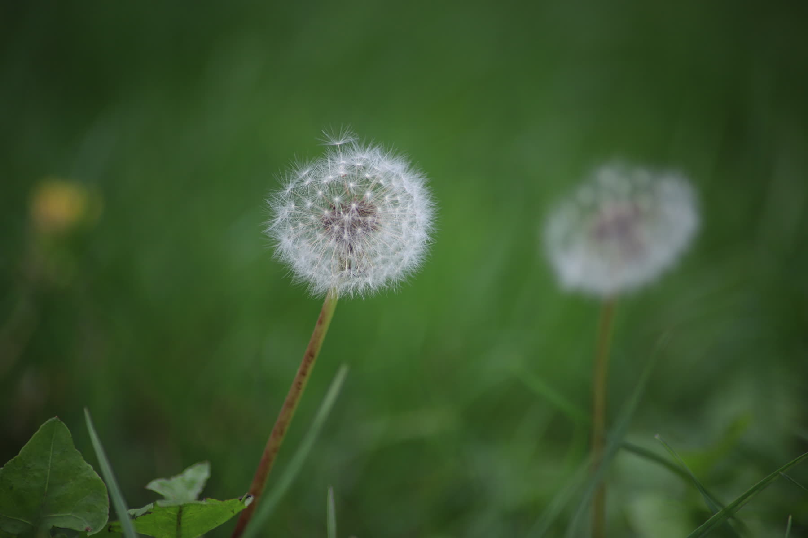

About
Wo alles beginnt.
Wildgrün Naturwerk ist die Idee, Naturverbundenheit, praktisches Handwerk und ein gutes Auge für Lebensräume in einen eigenen Betrieb zu bringen.
Tobias Dio
30, naturverbunden, mit Blick für Details.
Der Anfang liegt nicht in großen Maschinen oder riesigen Baustellen, sondern in ehrlicher Arbeit draußen: pflegen, schneiden, ordnen, gestalten und kleine Bereiche so verändern, dass sie wieder Sinn ergeben.
Aus der Fotografie kommt der Blick für Bildaufbau, Licht und Atmosphäre. Im Garten wird daraus ein Gespür für Struktur, Material und Orte, die nicht künstlich wirken sollen.

Viel Zeit draußen, Interesse an Pflanzen, Wasser, Stein, Holz und naturnahen Strukturen.
Fotografie, Naturmotive und ein Auge dafür, wann ein Ort stimmig wirkt.
Einen eigenen Garten- und Landschaftsbau-Betrieb aufbauen, der klein startet und sich sauber entwickelt.
Pflegearbeiten, kleine Fällungen, Pflaster, Teichbau, naturnahe Gestaltung und Anlagen für Tiere.
Erste Aufträge annehmen, echte Projektbilder sammeln und das Portfolio Stück für Stück füllen.